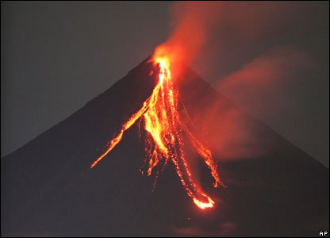

VulkanKjegle
Vulkankjegler er av de enkleste vulkanformasjonene i verden. De er bygd opp av fragmenter som er kastet opp (sprøytet ut) fra en vulkanventil og som samler seg opp i en haug rundt ventilen i form av en kjegle med et krater i midten. Vulkankjegler kan deles inn i forskjellige typer, avhengig av hva slags stoff som kastes ut i utbruddet. De vanligste typene er sprutkjegle, sinderkjegle, askekjegle og tuffkjegle.
Kjeglevulkaner er vulkaner med bratte skråninger, 33 graders helning eller mer. De blir maks 300 meter høye og er den minste av de tre vulkantypene. De andre typene er skjoldvulkan og sammensatt vulkan.
